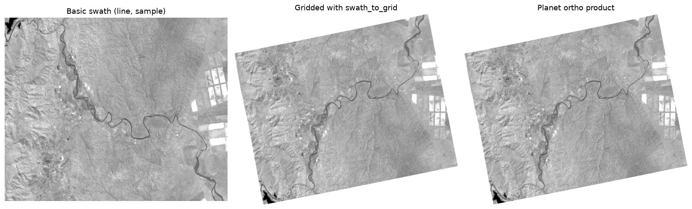
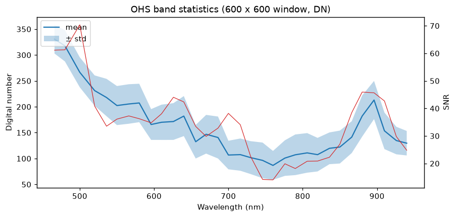
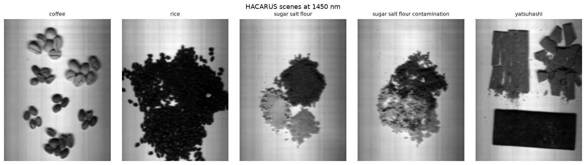
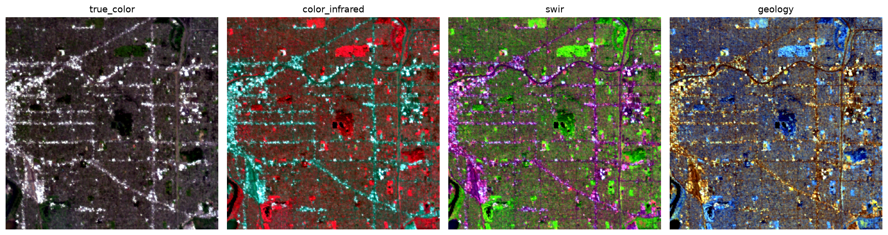
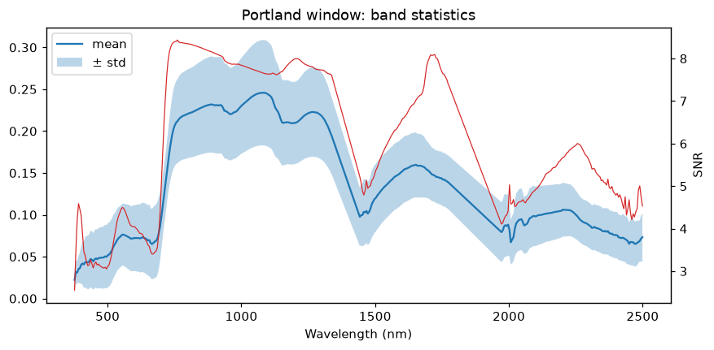
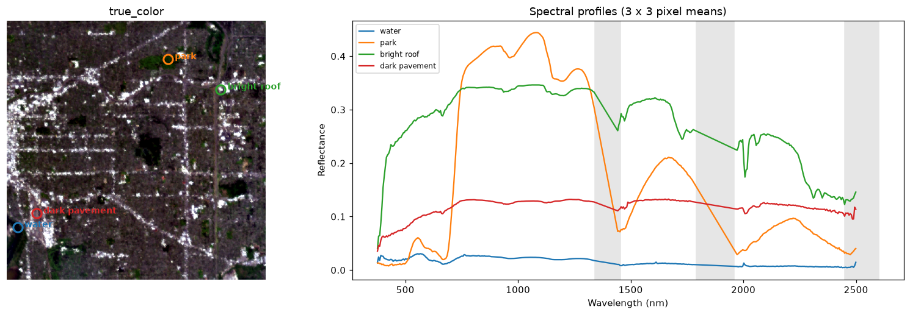

Hyperspectral products come in many containers: HDF-EOS5 grids and swaths, NetCDF, ENVI binary files with text headers, one GeoTIFF per band, plain NumPy arrays or folders of PNG images. Each stores wavelengths, fill values, quality flags and georeferencing in its own way. This notebook reads all four sensors of the chapter into the same GeoLattice cube, compares orthorectified and swath products, georeferences a swath from per pixel latitude and longitude and an OHS scene from its RPCs, explores cubes with band statistics and spectral profiles, and writes subsets to ENVI for fast reuse.
Overview
Containers and layouts
Format
Typical products
What to look for
HDF5 / HDF-EOS5
Tanager, PRISMA, EMIT (NetCDF4 is HDF5 inside)
Groups and datasets; band metadata in attributes; grid georeferencing in StructMetadata.0
NetCDF
EMIT L1B and L2A
sensor_band_parameters (wavelengths, FWHM, good bands) and a location group with a geometry lookup table
ENVI
AVIRIS-NG, AVIRIS-3, HySpex, many processing chains
A text .hdr with wavelength, fwhm, bbl (bad band list), map info, data ignore value, reflectance scale factor; data in BSQ, BIL or BIP
GeoTIFF
EnMAP (one multiband file), OHS (one file per band)
Band descriptions or tags for wavelengths; side car XML for gains and band centres
Arrays and images
Benchmarks (Pavia), laboratory cameras
Wavelengths come from a separate table or the file names
Band sequential (BSQ) storage is fast for reading whole bands, BIP for reading whole spectra and BIL is a compromise. HDF5 files are usually chunked and compressed, so reading a window or a few bands touches only the chunks that hold them.
Metadata that matters
Wavelengths and FWHM for every band, in nm or µm.
Good band flags (good_wavelengths in Tanager and EMIT, bbl in ENVI): bands to ignore.
Fill values (often -9999 or 0) and no-data masks.
Scale factors and offsets to turn stored integers into radiance or reflectance.
Units: radiance in W m⁻² sr⁻¹ µm⁻¹ (or µW cm⁻² sr⁻¹ nm⁻¹, a factor of 10 apart), reflectance as a fraction or in percent or scaled by 10,000.
Geometry: swath, grid and RPC
Pushbroom data are acquired as a swath: lines along track by samples across track, in sensor geometry. Three ways bring them to a map:
an orthorectified grid delivered by the provider (Tanager ortho, EMIT with its geometry lookup table, PRISMA L2D, EnMAP L2A);
per pixel latitude and longitude (Tanager basic, PRISMA L2B and L2C), resampled by the user;
a rational polynomial camera (RPC) model plus a terrain height (OHS, most commercial satellites), which maps image coordinates to ground coordinates.
Gridding a swath with nearest neighbour keeps the original spectra unchanged, which matters for spectral analysis; bilinear or cubic resampling mixes neighbouring spectra.
Working with large cubes
A full Tanager scene holds about 220 million values. Read only what you need (a window, a bounding box, a wavelength range or a few bands), keep float32, and write analysis ready subsets to ENVI or GeoTIFF once instead of reopening the HDF5 file in every step.
Reading Hyperspectral Data with GeoLattice
GeoLattice has one reader per product family and a dispatcher, hs.read_hyperspectral, that picks the reader from the file. All return a cube (band, y, x) (or (band, line, sample) for swaths) with wavelength, fwhm and good coordinates, fill values as NaN and a CRS when known.
Learning objectives
Inspect the structure of an HDF-EOS5 file and find the band metadata.
Read Tanager products whole or by window, bounding box, band list or wavelength range, and know what each costs.
Grid a Tanager swath from its latitude and longitude with hs.swath_to_grid and check it against the provider’s orthorectified product.
Read an OHS scene in sensor geometry and orthorectify it with its RPCs.
Turn a NumPy array or a folder of images into a cube with hs.as_cube.
Explore cubes with band statistics, spectral profiles and composites.
Write subsets to ENVI and read them back.
Data
Dataset
Files
Tanager agriculture scene
Tanger/agriculture/20250224_145149_32_4001/ (ortho SR and radiance) and the basic radiance swath 20250224_145149_32_4001_basic_radiance_hdf5.h5
Tanager swath with a separate geolocation array
20250516_181930_35_4001_basic_radiance_hdf5.h5 and 20250516_181930_35_4001_geolocation_array.tif
Installation. This notebook needs installation option 5 (core, spatial analysis, spatial statistics, geostatistics and remote sensing): pip install "geolattice[remote-sensing]". See “Installation options” in the GeoLattice README.
Code
import warnings # warning controlwarnings.filterwarnings("ignore") # hide routine library warningsfrom pathlib import Path # file pathsimport numpy as np # arraysimport pandas as pd # tablesimport matplotlib.pyplot as plt # figuresimport geolattice # GeoLatticefrom geolattice.rsense import hyperspectral as hs # hyperspectral cubes, readers and toolsplt.rcParams.update({"figure.dpi": 110}) # figure resolutionDATA = Path("../../../../Data/08_remote_sensing/08_05_HyperSpectral") # data folder next to this notebookTANAGER = DATA /"Tanger"# Planet Tanager sample scenesOUT = Path("outputs") # results written by this notebookOUT.mkdir(exist_ok=True) # create it if neededdef tanager_file(category, product="sr"):"""Path of a Tanager product (sr or radiance) for a scene category folder."""returnnext((TANAGER / category).glob(f"*/*_ortho_{product}_hdf5.h5"))print("GeoLattice", geolattice.__version__) # library version used for this notebookimport re # parse wavelengths from file namesimport time # timingimport h5py # HDF5 filesfrom PIL import Image # PNG band images
GeoLattice 0.3.49
Inside a Tanager HDF-EOS5 file
h5py lists every group and dataset. The Tanager surface reflectance file has one grid, HYP, with the cube, its uncertainty and eleven 2-D layers.
Code
sr_agri = tanager_file("agriculture") # ortho surface reflectance filewith h5py.File(sr_agri, "r") as f: rows = [] f.visititems(lambda name, obj: rows.append({"dataset": name, "shape": obj.shape, "dtype": str(obj.dtype),"chunks": obj.chunks, "compression": obj.compression})ifisinstance(obj, h5py.Dataset) elseNone) # one row per dataset sr = f["HDFEOS/GRIDS/HYP/Data Fields/surface_reflectance"] # the cube attrs = {k: (v[:4] if np.ndim(v) else v) for k, v in sr.attrs.items()} # first values of each attribute struct = f["HDFEOS INFORMATION/StructMetadata.0"][()].decode() # grid definition textprint(sr_agri.name, f"{sr_agri.stat().st_size /2**20:.0f} MB")display(pd.DataFrame(rows).assign(dataset=lambda d: d["dataset"].str.replace("HDFEOS/GRIDS/HYP/Data Fields/", "")))attrs
The cube is stored band first, (426, 663, 775), as float32 in chunks of 14 bands by 42 by 49 pixels, compressed with gzip. Wavelengths, FWHM and the good band flags are attributes of the dataset, and StructMetadata.0 gives the corner coordinates in metres and the UTM zone (-20 means zone 20 south). hs.read_tanager turns all of this into a cube.
Reading Tanager products by subset
Because of the chunking, the cost of a read depends on how many chunks it touches. The table times five ways of reading the same file.
Code
scenes = pd.read_json(TANAGER /"scenes.json") # scene index with lon/lat bounding boxesbbox = scenes.loc[scenes["category"] =="Agriculture", "bbox"].iloc[0] # full scene boxlon0, lat0 = (bbox[0] + bbox[2]) /2, (bbox[1] + bbox[3]) /2# scene centresmall_box = (lon0 -0.03, lat0 -0.03, lon0 +0.03, lat0 +0.03) # about 6 x 6 km around itreads = {"whole cube": dict(),"window 200 x 200": dict(window=(slice(200, 400), slice(300, 500))),"bbox about 6 x 6 km": dict(bbox=small_box),"VNIR only (400 to 1000 nm)": dict(wavelength_range=(400, 1000)),"three bands": dict(bands=[37, 55, 97]),}timing = []for name, kw in reads.items(): t0 = time.perf_counter() c = hs.read_tanager(sr_agri, **kw) # read with this subset timing.append({"read": name, "shape": c.shape, "MB in memory": round(c.nbytes /2**20),"seconds": round(time.perf_counter() - t0, 2)})if name =="whole cube": full = c # keep the whole cube for laterpd.DataFrame(timing)
read
shape
MB in memory
seconds
0
whole cube
(426, 663, 775)
835
3.71
1
window 200 x 200
(426, 200, 200)
65
0.52
2
bbox about 6 x 6 km
(426, 222, 207)
75
0.63
3
VNIR only (400 to 1000 nm)
(120, 663, 775)
235
1.15
4
three bands
(3, 663, 775)
6
0.40
Code
print(full.dims, full.rio.crs, "| x:", float(full.x[0]), "to", float(full.x[-1]), "| y:", float(full.y[0]), "to", float(full.y[-1]))print("NaN fraction (outside the swath):", round(float(np.isnan(full.isel(band=60)).mean()), 3))full.coords # band coordinates: wavelength, fwhm, good
('band', 'y', 'x') EPSG:32720 | x: 419505.0 to 442725.0 | y: 7556475.0 to 7536615.0
NaN fraction (outside the swath): 0.284
Reading the whole cube decompresses every chunk and takes a few seconds; a window, a bounding box or a few bands is much faster and smaller. The VNIR read still touches every pixel and so costs about as much as its share of the bands. Pixels outside the tilted swath are NaN: the orthorectified grid is a rectangle around a rotated footprint, so about a quarter of it is empty.
Ortho grid and basic swath
The basic product is the same acquisition before orthorectification: lines and samples in sensor geometry, with latitude and longitude for every pixel. hs.swath_to_grid places each grid cell on the nearest swath pixel; with a 30 m grid aligned to multiples of 30 m it lands on the same cells as Planet’s ortho product, so the two can be compared pixel by pixel.
a, b = grid.isel(band=4), ortho.isel(band=4) # one NIR band (about 861 nm) from eachcommon_x = np.intersect1d(a.x.values, b.x.values) # shared grid columnscommon_y = np.intersect1d(a.y.values, b.y.values) # shared grid rowsA = a.sel(x=common_x, y=common_y).values # gridded swath on the common cellsB = b.sel(x=common_x, y=common_y).values # ortho product on the same cellsok = np.isfinite(A) & np.isfinite(B) # cells valid in bothprint(f"common cells: {ok.sum():,} | identical values: {np.mean(np.isclose(A[ok], B[ok])):.1%} | "f"correlation: {np.corrcoef(A[ok], B[ok])[0, 1]:.4f}")fig, axes = plt.subplots(1, 3, figsize=(15, 4.8))axes[0].imshow(sw.isel(band=4), cmap="gray", vmax=np.nanpercentile(sw.isel(band=4), 99))axes[0].set_title("Basic swath (line, sample)")for ax, img, t in [(axes[1], A, "Gridded with swath_to_grid"), (axes[2], B, "Planet ortho product")]: ax.imshow(img, cmap="gray", vmax=np.nanpercentile(B, 99)); ax.set_title(t)for ax in axes: ax.axis("off")plt.tight_layout()plt.show()
common cells: 368,045 | identical values: 98.9% | correlation: 0.9989

The swath is the image as the sensor saw it, unrotated. After gridding, most cells hold exactly the value of Planet’s ortho product and the correlation is close to one; the rest differ because the two nearest neighbour searches break ties differently near the swath edges and Planet’s processor uses its own terrain model. Gridding your own swath therefore reproduces the provider’s grid, which is useful when only the basic product is available or when a different grid is needed.
A swath with a separate geolocation array
The second basic scene in the chapter folder ships its latitude and longitude as a two band GeoTIFF instead. read_tanager(geolocation=...) attaches them.
Code
sw2 = hs.read_tanager(DATA /"20250516_181930_35_4001_basic_radiance_hdf5.h5", geolocation=DATA /"20250516_181930_35_4001_geolocation_array.tif", bands=[37, 55, 97]) # about 561, 651 and 861 nmprint(sw2.shape, "| centre:", round(float(sw2.lat.mean()), 3), round(float(sw2.lon.mean()), 3))g2 = hs.swath_to_grid(sw2, 30.0) # UTM grid of the scene centreprint("gridded:", g2.shape, g2.rio.crs)fig, axes = plt.subplots(1, 2, figsize=(12, 5.5))hs.plot_rgb(sw2, (861, 651, 561), ax=axes[0], title="Swath, colour infrared")hs.plot_rgb(g2, (861, 651, 561), ax=axes[1], title=f"Gridded to {g2.rio.crs}")plt.tight_layout()plt.show()
This acquisition lies on the Colorado plains east of the Front Range (about 40.1° N, 104.5° W): irrigated circles and rectangular fields stand out in colour infrared. Gridding rotates the swath into its north up footprint.
OHS: band files and RPC orthorectification
An OHS L1 scene is 32 single band GeoTIFFs of 5056 by 5056 pixels with a shared RPC model and a *_meta.xml. hs.read_ohs stacks the bands in order, attaches the nominal band centres and keeps the RPCs; window= reads a part of the image and ortho=True warps it to a map.
Code
ohs_dir =next((DATA /"10m_OH2_Hyperspectral_Sample/Spanish-OHS").iterdir()) # scene folderWIN_OHS = (slice(2000, 2600), slice(2000, 2600)) # 600 x 600 pixels (6 x 6 km)ohs = hs.read_ohs(ohs_dir, window=WIN_OHS) # sensor geometry, all 32 bandsprint(ohs.dims, ohs.shape, "| wavelengths:", hs.wavelengths(ohs)[[0, -1]])print({k: v for k, v in ohs.attrs.items() if k !="rpcs"})rpc = ohs.attrs["rpcs"] # rational polynomial camera model (shifted to the window)print("RPC offsets: line", rpc.line_off, "sample", rpc.samp_off, "| lat", rpc.lat_off, "lon", rpc.long_off,"| height", rpc.height_off, "m")
The L1 image is already close to north up, so the RPC warp mainly rotates it by a few degrees, corrects the scale and places it on a UTM grid (zone 30 N) with real coordinates. The window shows the shore of a reservoir (dark water) surrounded by dry summer fields and pasture. The NaN corners of the ortho grid are outside the rotated window. Note that the values are L1 digital numbers, not radiance or reflectance.
Code
st_ohs = hs.band_stats(ohs) # per band statistics of the raw DNsax = hs.plot_band_stats(st_ohs)ax.set_ylabel("Digital number"); ax.set_title("OHS band statistics (600 x 600 window, DN)")plt.show()

Arrays and image folders: Pavia and HACARUS
Benchmarks are often distributed as arrays without metadata. hs.as_cube adds the band axis and wavelengths. The Pavia Centre array is (rows, cols, bands), so it is transposed first; its 102 ROSIS bands span about 430 to 860 nm and are treated as evenly spaced.
Pavia Centre is a 1.3 m ROSIS image of the historic centre of Pavia and the Ticino river. The vertical seam about a third of the way across is where the dataset authors removed a strip of pixels without information and joined the two parts. Dividing by 10,000 gives reflectance assuming the common scaling of this benchmark.
Code
def read_png_cube(folder):"""Stack the *_<wavelength>nm.png band images of a HACARUS scene into a cube.""" files =sorted(Path(folder).glob("*nm.png"), key=lambda p: float(re.search(r"_(\d+)nm", p.name)[1])) wl = [float(re.search(r"_(\d+)nm", p.name)[1]) for p in files] # wavelength from the file name stack = np.stack([np.asarray(Image.open(p), dtype="float32") for p in files]) # (band, row, col)return hs.as_cube(stack, wl, name="dn")lab = {p.name: read_png_cube(p) for p insorted((DATA /"archive/data").iterdir())} # all five scenesfig, axes = plt.subplots(1, 5, figsize=(15, 4.2))for ax, (name, c) inzip(axes, lab.items()): ax.imshow(hs.band_at(c, 1450), cmap="gray") # 1450 nm, a water and O-H band ax.set_title(name.replace("_", " "), fontsize=9); ax.axis("off")plt.suptitle("HACARUS scenes at 1450 nm")plt.tight_layout()plt.show()

Exploring a cube
The urban scene (Portland, Oregon) mixes many materials. A 300 by 300 pixel window is centred on the open water pixel nearest the scene centre, so it holds a stretch of river and the surrounding city; it is read with all bands, then explored with band statistics, composites and spectral profiles.
Code
few = hs.read_tanager(tanager_file("urban"), bands=[37, 97]) # green and NIR of the whole sceneg, n = few.values # 561 and 861 nmwater = (g - n) / (g + n) >0.3# open water by NDWIrr, cc = np.nonzero(water) # water pixelsi = np.argmin((rr - water.shape[0] /2) **2+ (cc - water.shape[1] /2) **2) # water pixel nearest the centrer0, c0 =int(np.clip(rr[i] -150, 0, water.shape[0] -300)), int(np.clip(cc[i] -150, 0, water.shape[1] -300))urban = hs.read_tanager(tanager_file("urban"), window=(slice(r0, r0 +300), slice(c0, c0 +300))) # 9 x 9 kmprint("window rows", r0, "to", r0 +300, "| cols", c0, "to", c0 +300)urban = urban.isel(band=np.flatnonzero(urban["good"].values)) # drop the product's bad bandsprint(urban.shape)fig, axes = plt.subplots(1, 4, figsize=(16, 4.3))for ax, comp inzip(axes, ["true_color", "color_infrared", "swir", "geology"]): hs.plot_rgb(urban, comp, ax=ax) # four standard compositesplt.tight_layout()plt.show()
window rows 319 to 619 | cols 285 to 585
(368, 300, 300)

Code
st = hs.band_stats(urban) # mean, std, min, max, NaN fraction and SNR per banddisplay(st.describe().loc[["mean", "min", "max"], ["mean", "std", "snr"]].round(3))ax = hs.plot_band_stats(st)ax.set_title("Portland window: band statistics")plt.show()
mean
std
snr
mean
0.138
0.041
6.080
min
0.022
0.012
2.556
max
0.246
0.063
8.435

Code
xs, ys = urban.x.values, urban.y.values # map coordinates of the windowG, R, N, S1 = (hs.band_at(urban, w).values for w in (560, 650, 860, 1650)) # four bandsndvi, ndwi = (N - R) / (N + R), (G - N) / (G + N) # vegetation and water indicesdef pick(score, q):"""(row, col) of the pixel whose score is closest to its q-th quantile."""return np.unravel_index(np.nanargmin(np.abs(score - np.nanquantile(score, q))), score.shape)pts = {"water": pick(np.where(ndwi >0.3, N, np.nan), 0.5), # typical open water pixel"park": pick(ndvi, 0.99), # dense vegetation"bright roof": pick(np.where(ndvi <0.1, S1, np.nan), 0.99), # brightest non-vegetated SWIR"dark pavement": pick(np.where((ndvi <0.1) & (ndwi <0), S1, np.nan), 0.1)} # dark, dry, bareframe = hs.spectra_at(urban, [(xs[c], ys[r]) for r, c in pts.values()], buffer=1) # 3 x 3 meansframe.index =list(pts)fig, axes = plt.subplots(1, 2, figsize=(14, 4.8), gridspec_kw={"width_ratios": [1, 1.8]})hs.plot_rgb(urban, "true_color", ax=axes[0])for (k, (r, c)), col inzip(pts.items(), ["C0", "C1", "C2", "C3"]): axes[0].plot(c, r, "o", mfc="none", mec=col, ms=10, mew=2) axes[0].text(c +8, r, k, color=col, fontsize=9, weight="bold")hs.plot_spectra(frame, ax=axes[1], bad_ranges=hs.preprocess.WATER_VAPOUR_RANGES)axes[1].set_title("Spectral profiles (3 x 3 pixel means)")plt.tight_layout()plt.show()

The four pixels are chosen by simple index rules, as in notebook 09_05_00. Water is dark at all wavelengths and nearly zero beyond 900 nm; the park has the vegetation red edge; the bright roof and the dark pavement are flat spectra that differ mainly in brightness, with small SWIR features that come from roofing materials and asphalt.
Code
fig = hs.spectral_viewer(urban.isel(x=slice(None, None, 3), y=slice(None, None, 3)), [(xs[c], ys[r]) for r, c in pts.values()], composite="true_color")fig.update_layout(width=950, height=420)fig.show()
Unable to display output for mime type(s): application/vnd.plotly.v1+json
Writing and reusing subsets
ENVI is the simplest interchange format for cubes: a raw binary file plus a text header that keeps wavelengths, FWHM, the bad band list and the map information. hs.write_envi writes a cube, hs.read_envi reads it back (also by window and bands through a memory map), and hs.subset_file cuts a smaller file out of a large one without loading it.
Code
path = hs.write_envi(urban, OUT /"portland_tanager_sr.img") # BSQ float32 + .hdrsize = Path(path).stat().st_size /2**20# data file sizeback = hs.read_envi(path) # read it againprint(path, f"{size:.0f} MB", "| same values:", bool(np.allclose(back.values, urban.values, equal_nan=True)),"| CRS:", back.rio.crs, "| wavelengths kept:", bool(np.allclose(hs.wavelengths(back), hs.wavelengths(urban))))print(Path(path +".hdr").read_text()[:600])
memory-mapped subset: (37, 50, 50) in 0.007 s
subset file: outputs/clips/portland_100px.img (368, 100, 100)
Writing once and reading the ENVI file later avoids decompressing the HDF5 file again: the memory mapped read above takes milliseconds. Later notebooks read their own windows straight from the Tanager files so that each runs on its own, but in a project you would cut analysis ready subsets like these first.
Summary and exercises
Key points
Hyperspectral containers differ (HDF-EOS5, NetCDF, ENVI, GeoTIFF, arrays, images) but carry the same essentials: wavelengths, FWHM, good bands, fill values, scale factors and georeferencing.
HDF5 chunking makes windows, bounding boxes and band subsets cheap; whole cube reads are not.
Swaths are in sensor geometry. Nearest neighbour gridding from per pixel latitude and longitude (hs.swath_to_grid) reproduces the provider’s 30 m grid for Tanager; RPCs orthorectify OHS.
hs.as_cube turns any array into a GeoLattice cube once the wavelengths are known.
Band statistics, composites and spectral profiles are the first look at any cube; ENVI files make subsets fast to reuse.
Time a read of the snow and ice scene with wavelength_range=(2000, 2400) and with bands= set to every tenth band. Which is faster, and why?
Grid the agriculture swath at 60 m with swath_to_grid(sw, 60.0) and compare it with the 30 m ortho product aggregated to 60 m (coarsen(x=2, y=2).mean()).
Orthorectify the OHS window with crs="EPSG:4326" and a resolution of 0.0001°. How many pixels does the result have, and why is it not square?
Write the Portland window as BIP with write_envi(..., interleave="bip") and time reading one full spectrum and one full band from the BSQ and BIP files.